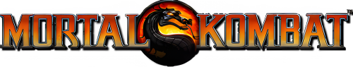
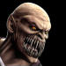
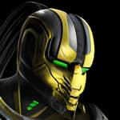
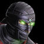
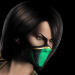
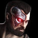
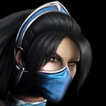
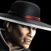
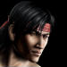
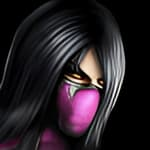
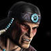
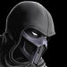
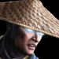
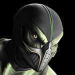
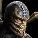
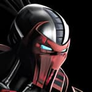
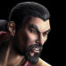
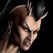
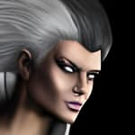
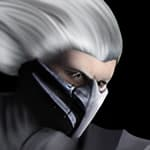
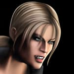
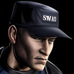
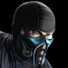
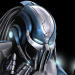
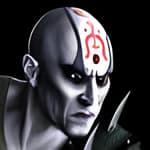
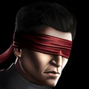
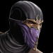
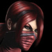
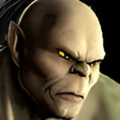
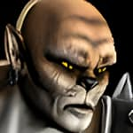
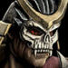
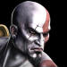
| U = Up/Jump D = Down/Crouch F = Forward/Toward B = Back/Away |
Dash: F, F Back Dash: B, B Uppercut: (D+Δ) Sweep: (B+O) Pause/Movelist: START |
| Universal: FP = Front Punch BP = Back Punch FK = Front Kick BK = Back Kick TG = Tag *TH = Throw (Away) = TH or (FP+FK) *(F+TH) = Throw (Towards) or (F+FP+FK) FS = Flip Stance or (FK+BK) BL = Block TH (Away) Reversal = FP/FK TH (Towards) Reversal = BP/BK |
PlayStation 3: FP = ▢ BP = Δ FK = ✕ BK = O TG = L1 *TH = R1 or (▢+✕) *(F+TH) = (F+R1) or (F+▢+✕) FS = L2 or (✕+O) BL = R2 TH (Back) Reversal = ▢/✕ TH (Forward) Reversal = Δ/O |
Bio:
Baraka is the fiercest of the Tarkatans, vicious nomadic mutants from the wastes of Outworld. Like all Tarkatan males, he joined Shao Kahn's army once he came of age and survived the brutal Ritual of Blood. He gained the rank of
Enforcer after single-handedly defeating a rebel faction. His loyalty and strength make him a favorite of the emperor; his retractable blades have slain many of Shao Kahn's most bitter enemies. As a kontestant in the Mortal Kombat
tournament, he will ensure his emperor's claim to Earthrealm.
| Special Moves: Blade Charge: D, F, Δ Spark: D, B, Δ Chop Chop: B, B, ▢ Blade Spin: D, B, ✕ Slices: D, F, ▢ |
Enhanced Special Moves: Blade Rush: D, F, (Δ+R2) Sparked: D, B, (Δ+R2) Chopchop Shop: B, B, (▢+R2) Spinner: D, B, (✕+R2) Slicer: D, F, (▢+R2) |
X-Ray Attack:
Nail and Impale: (L2+R2)
Finishers:
Fatality 1 - Up The Middle: B, F, D, F, ▢ (Sweep)
Fatality 2 - Take a Spin: F, F, D, D, ✕ (Sweep)
Babality: F, B, F, O (Jump)
Stage Fatality: D, D, D, D, ✕ (Varies)
Bio:
A skilled Motswana warrior, Cyrax relies on his natural fighting ability, his chi, to carry out Lin Kuei missions. He is proud to serve, but when the Grand Master initiates a program to convert the clan into cyborgs, Cyrax resists. He is reluctant to lose
his humanity, which he believes is more effective than any mechanical augmentation. He has contemplated leaving the clan, fearing that it is no longer an organization of honorable assassins. Cyrax knows, however, that such a decision means death at the
hands of his former comrades. No one leaves the Lin Kuei.
| Special Moves: Net: B, B, ✕ Teleport: D, B, ▢ (Also in Air) Buzzsaw: B, F, Δ Reverse Kick: D, F, ✕ Ragdoll: D, F, ✕, R1 Anti-Air: D, F, ▢ (Opponent in Air) Bomb - Close: B, B, O Bomb - Medium: F, F, O Bomb - Far: B, B, F, O |
Enhanced Special Moves: Electro Net: B, B, (✕+R2) Bangport: D, B, (▢+R2) (Also in Air) Saw Blade: B, F, (Δ+R2) Donkey Kick: D, F, (✕+R2) Ragdolls: D, F, (✕+R2), R1 Power Anti-Air: D, F, (▢+R2) (Opponent in Air) Sticky Bomb - Close: B, B, (O+R2) |
X-Ray Attack:
Cyberdriver: (L2+R2)
Finishers:
Fatality 1 - Buzz Kill: F, D, F, B, Δ (Close)
Fatality 2 - Nothing but Net: B, D, B, F, ▢ (Jump)
Babality: D, F, B, Δ (Jump)
Stage Fatality: (Hold R2), D, U, (Release R2), R2 (Varies)
Bio:
As punishment for resisting Shao Kahn's claim to the realm of Edenia, the souls of the vanquished were torn from their bodies and fused together to form the being now known as Ermac. Bent to Shao Kahn's
will, Ermac is his foremost enforcer. The essences of so many souls bound together give Ermac immense telekinetic power - an advantage that will destroy Earthrealm's resistance to Shao Kahn's rule.
| Special Moves: Force Ball: D, B, Δ Airblast: D, B, Δ (In Air) Force Port: D, B, O (Also in Air) Force Lift: D, B, ▢ Hover Slam: D, D, U (Hold R2 to Delay) Force Push: B, F, ▢ |
Enhanced Special Moves: Focus Ball: D, B, (Δ+R2) Force Blast: D, B, (Δ+R2) (In Air) Teleport: D, B, (O+R2) (Also in Air) Telelift: D, B, (▢+R2) Levitate Smash: D, D, (U+R2) (Hold R2 to Delay) Telepush: B, F, (▢+R2) |
X-Ray Attack:
Cannonball Slam: (L2+R2)
Finishers:
Fatality 1 - Mind Over Splatter: (Hold R2), D, U, D, D, (Release R2), R2 (Jump)
Fatality 2 - Pest Control: F, B, F, D, O (Jump)
Babality: D, D, B, D, Δ (Jump)
Stage Fatality: (Hold R2), D, U, D, D, (Release R2), ✕ (Varies)
Bio:
An assassin for Shao Kahn, Jade has earned a reputation as an agile and stealthy warrior. Her family was Edenian nobility and served the emperor once he conquered their realm, giving Jade to him as tribute when she was a child.
After years of rigorous training in the art of kombat, Shao Kahn awarded her the position of Bodyguard to Princess Kitana. Over the centuries she and Kitana have become close friends,
which makes Jade's secret orders from Shao Kahn painful to accept: Should Kitana's loyalty falter, Jade must kill her friend.
| Special Moves: Boomerang: D, F, ▢ Boomerang - Up: D, B, ▢ Boomerang - Down: D, F, ✕ Shadow Kick: D, F, O Shadow Flash: B, F, ✕ Staff Overhead: D, B, Δ Staff Grab: D, F, Δ |
Enhanced Special Moves: Reboomerang: D, F, (▢+R2) Reboomerang - Up: D, B, (▢+R2) Reboomerang - Down: D, F, (✕+R2) Eclipse Kick: D, F, (O+R2) Shadow Glow: B, F, (✕+R2) (Invulnerable to knock-down or pop-up) Staff Smash: D, B, (Δ+R2) Staff Slam: D, F, (Δ+R2) |
X-Ray Attack:
Staff Buster: (L2+R2)
Finishers:
Fatality 1 - Head-A-Rang: (Hold R2), U, U, D, F, (Release R2), ▢ (Fullscreen)
Fatality 2 - Half Mast: B, D, B, D, O (Sweep)
Babality: D, D, F, D, O (Jump)
Stage Fatality: B, F, D, R2 (Varies)
Bio:
A decorated member of the U.S. Special Forces and a formidable close-kombat warrior, Major Jackson Briggs' current mission is to bring down the notorious criminal organization known as the Black Dragon. With Lieutenant Sonya Blade,
he has seized many of their weapons caches. But when a trusted informant, Kano, was revealed to be a high-ranking member of the Black Dragon, Jax made Kano's capture his priority. Kano has gotten
the better of Jax thus far, leading the Special Forces into numerous deadly ambushes. Jax and Sonya finally cornered Kano on an uncharted island but were overpowered by the island's inhabitants. They have now been
forced into a sadistic ritual of bloody kombat.
| Special Moves: Energy Wave: D, B, Δ Dash Punch: D, F, Δ Gotcha Grab: D, F, ▢ Air Gotcha Grab: D, B, ▢ (In Air, Close) Overhead Smash: D, U, O Ground Pound - Close: D, B, ✕ Ground Pound - Med: D, F, ✕ Ground Pound - Far: D, B, F, ✕ Back Breaker: R1 (In Air, Close) |
Enhanced Special Moves: Assault Wave: D, B, (Δ+R2) Dash Fist: D, F, (Δ+R2) Gotcha Beatdown: D, F, (▢+R2) Air Gotcha Blast: D, B, (▢+R2) (In Air, Close) Elite Smash: D, U, (O+R2) Ground Quake - Close: D, B, (✕+R2) |
X-Ray Attack:
Briggs Bash: (L2+R2)
Finishers:
Fatality 1 - Smash and Grab: B, F, F, B, Δ (Close)
Fatality 2 - Three Points!: F, F, B, D, ✕ (Sweep)
Babality: D, D, D, ✕ (Jump)
Stage Fatality: D, F, D, ▢ (Varies)
Bio:
There is no greater martial arts movie star than Johnny Cage. Films such as "Dragon Fist", "Time Smashers" and "Citizen Cage" have made him one of the most highly paid actors in Hollywood. But there is more to Johnny than
even he knows. He is a descendant of an ancient Mediterranean cult who bred warriors for the gods - warriors who possessed power beyond that of mortals. This legacy has made Johnny Cage a star. More important, it will aid him in the battle to come.
| Special Moves: Low Forceball: D, F, Δ High Forceball: D, B, Δ Flip Kick: D, B, ✕ Shadow Kick: B, F, O Nut Punch: B, D, ▢ |
Enhanced Special Moves: Double Low Ball: D, F, (Δ+R2) Double High Ball: D, B, (Δ+R2) Ultra Flip Kick: D, B, (✕+R2) Eclipse Kick: B, F, (O+R2) Nutcracker: B, D, (▢+R2) |
X-Ray Attack:
Ball Buster: (L2+R2) (Counter Attack)
Finishers:
Fatality 1 - Heads Up!: F, F, B, D, ✕ (Close)
Fatality 2 - And The Winner Is...: D, F, D, F, O (Sweep)
Babality: F, B, F, O (Jump)
Stage Fatality: D, B, F, R2 (Varies)
Bio:
Once a member of the Black Dragon clan, Kabal gave up his life of crime and put his fighting skills to more positive uses. He joined the New York City police force to kombat the underworld element he once served. This transition helped ease the pain of
dark memories. But when New York was invaded he underwent another transformation - one that would afflict him physically. Severely injured in battle, he is doomed to wear a life support system forever.
| Special Moves: Gas Blast: B, B, ▢ (Also in Air) Nomad Dash: B, F, O Buzzsaw: B, B, ✕ Tornado Slam: D, B, Δ |
Enhanced Special Moves: Vapor Blast: B, B, (▢+R2) (Also in Air) Nomad Charge: B, F, (O+R2) Saw Blades: B, B, (✕+R2) Cyclone Slam: D, B, (Δ+R2) |
X-Ray Attack:
Kabal's Deep: (L2+R2)
Finishers:
Fatality 1 - Hook Up: B, F, B, F, ▢ (Sweep)
Fatality 2 - It Takes Guts: D, D, B, F, R2 (Sweep)
Babality: F, D, B, ✕ (Jump)
Stage Fatality: D, D, O (Varies)
Bio:
Undisciplined and dangerous, Kano is a thug for hire. From weapons dealing to cold-blooded murder, his military training has made him the go-to man for the Black Dragon. But when an operation went to hell and his face horribly mutilated, Kano's crime spree
was almost ended. Ever the survivor, he used his underworld connections to find a cyberneticist capable of repairing the damage. Kano was fitted with several high-tech enhancements, most notably his eye laser. With these new weapons, Kano's reign of terror
has only just begun.
| Special Moves: Ball: F, D, B, F Down Ball: F, D, B, F (In Air) Up Ball: D, F, Δ Choke: D, F, ▢ Knife Throw: D, B, Δ Air Throw: R1 (In Air, Close) |
Enhanced Special Moves: Kano Ball: F, D, B, (F+R2) Downward Ball: F, D, B, (F+R2) (In Air) Uprise Ball: D, F, (Δ+R2) Kano Choke: D, F, (▢+R2) Knife Toss: D, B, (Δ+R2) |
X-Ray Attack:
Just The Tip: (L2+R2)
Finishers:
Fatality 1 - Heartbreak: B, D, B, F, ▢ (Sweep)
Fatality 2 - Eat Your Heart Out: D, D, F, B, O (Sweep)
Babality: F, D, D, ✕ (Jump)
Stage Fatality: (Hold R2), U, U, B, (Release R2), ✕ (Varies)
Bio:
Over 10,000 years old, Princess Kitana remembers little of her early years. Her mother, Queen Sindel, died mysteriously ages ago in Earthrealm. Most of her life she has loyally served her father, Shao Kahn,
in his unending quest to conquer the realms. With her closest friend, Jade, Kitana enforces his brutal will. But there is a feeling tugging at her... a feeling that the life she has known is a deception. For the moment, Kitana dutifully
works to ensure Outworld's victory in this latest Mortal Kombat tournament. If she were to lower her guard, however, she might discover that her Earthrealm opponents can lead her to answers.
| Special Moves: Fan Toss: D, F, ▢ (Also in Air) Upraise: B, B, Δ Cutting Fan: D, F, Δ Square Boost: D, B, ▢ (Also in Air) Pretty Kick: D, B, ✕ Fake Out Kick: D, B, O |
Enhanced Special Moves: Charged Fan: D, F, (▢+R2) (Hold ▢ to Charge) (Also in Air) Uplift: B, B, (Δ+R2) Fan Dice: D, F, (Δ+R2) Square Wave: D, B, (▢+R2) (Also in Air) Pretty Legs: D, B, (✕+R2) |
X-Ray Attack:
Fan-Tastic: (L2+R2)
Finishers:
Fatality 1 - Fan Opener: D, D, B, F, Δ (Sweep)
Fatality 2 - Splitting Headache: F, D, F, B, ✕ (Sweep)
Babality: F, D, F, O (Jump)
Stage Fatality: F, D, D, ✕ (Varies)
Bio:
Kung Lao's ancestor was defeated by Goro 500 years ago in the pivotal match that saw Shang Tsung attain control of the Mortal Kombat tournament. To him, this contest is about more than Earthrealm's freedom.
His life's goal has been to slay Goro and win the tournament, thus restoring his family's honor. After being defeated by Liu Kang in a qualifying bout, he disguised himself as one of Shang
Tsung's guards to gain admittance. Kung Lao believes he is ready for the challenge. The time to avenge his ancestor is at hand.
| Special Moves: Hat Toss: B, F, Δ (D/U to Control) Ground Hat: D, B, Δ Spin: D, F, ▢ Dive Kick: (D+O) (In Air) Teleport: D, U (Also in Air) ▢: Throw Δ: Mid Pop Up ✕: Kick O: KD Kick |
Enhanced Special Moves: Ultimate Hat: B, F, (Δ+R2) Grinding Hat: D, B, (Δ+R2) (Hold Δ to Delay) Cyclone: D, F, (▢+R2) Multi Kick: (D+O+R2) (In Air) |
X-Ray Attack:
Fist of Shaolin: (L2+R2)
Finishers:
Fatality 1 - Hat Trick: B, F, F, B, Δ (Sweep)
Fatality 2 - Razor's Edge: D, D, F, B, ▢ (Sweep)
Babality: D, F, D, Δ (Jump)
Stage Fatality: D, F, D, ✕ (Varies)
Bio:
Orphaned at a very young age, Liu Kang was raised by Shaolin monks, who taught him the way of the spiritual warrior. They soon recognized his potential as a contender for the Mortal Kombat tournament and rigorously trained him for this task.
Raiden, too, understood that Liu Kang was Earthrealm's best hope for freedom and introduced him to Master Bo' Rai Cho to further his development. Once fully trained, Liu Kang bested all challengers and earned the high honor of representing
the Shaolin in the Mortal Kombat tournament. He and Raiden then embarked on their fateful journey to Shang Tsung's island to compete in this pivotal kontest.
| Special Moves: High Fireball: B, F, ▢ (Also in Air) Low Fireball: B, F, ✕ Flying Dragon Kick: B, F, Δ Bicycle Kick: B, B, F, O Parry: D, B, ▢ |
Enhanced Special Moves: High Dragon Fire: B, F, (▢+R2) (Also in Air) Low Dragon Fire: B, F, (✕+R2) Flame Dragon Kick: B, F, (Δ+R2) Bicycle Steps: B, B, F, (O+R2) Burning Parry: D, B, (▢+R2) |
X-Ray Attack:
Chin Up: (L2+R2)
Finishers:
Fatality 1 - Fist of Flame: F, B, D, D, ✕ (Sweep)
Fatality 2 - The Beast Within: D, D, F, D, O (Jump)
Babality: D, D, D, O (Jump)
Stage Fatality: D, F, B, ✕ (Varies)
Bio:
Shang Tsung has created many abominable creatures in his Flesh Pits, but none so twisted as Mileena. A fusion of Edenian flesh and Tarkatan blood, Mileena is both beauty and beast. This
dichotomy has made her mind unstable; she is prone to fits of madness and savagery. Though she has the appearance of a mature woman, she is more child than adult - a blank slate conformed to Shao Kahn's will. Devoid of conscience
or remorse, Mileena will butcher anyone to appease her beloved father.
| Special Moves: Sai Blast: B, F, ▢ (Also in Air) Teleport Drop: F, F, ✕ (Also in Air) Leaping Neckbite: B, F, Δ Ball Roll: B, D, O |
Enhanced Special Moves: Sai Bursts: B, F, (▢+R2) (Also in Air) Tricky Teleport: F, F, (✕+R2) (Also in Air) Leaping Lunch: B, F, (Δ+R2) Smashing Roll: B, D, (O+R2) |
X-Ray Attack:
Femme Fatale: (L2+R2)
Finishers:
Fatality 1 - Be Mine: B, F, B, F, Δ (Jump)
Fatality 2 - Rip Off: B, F, B, D, ✕ (Jump)
Babality: D, D, F, B, Δ (Jump)
Stage Fatality: D, D, D, ▢ (Varies)
Bio:
Nightwolf is one of few Earthrealm mortals with a strong connection to the spirit world. A powerful Native American shaman, he is guided by the empyrean forces and communes with divine beings such as Haokah, known to the East as Raiden.
Nightwolf's devotion allows the Spirits to work through him, granting him unnatural long life and ethereal weapons to kombat the darkness that threatens mortal kind. In the coming crisis, however, it is not Nightwolf's arsenal that will alter fate. His
faith in the Spirits will inspire those who have lost hope.
| Special Moves: Shoulder: F, F, O Lightning: D, B, ✕ Arrow Shot: D, B, ▢ Reflect: D, B, Δ Axe Swing: D, F, ▢ Choke: D, F, Δ |
Enhanced Special Moves: Power Charge: F, F, (O+R2) Thunder Storm: D, B, (✕+R2) Multi-Arrow: D, B, (▢+R2) Absorb: D, B, (Δ+R2) Tomahawk Bash: D, F, (▢+R2) Strangle: D, F, (Δ+R2) |
X-Ray Attack:
Ancestors Call: (L2+R2)
Finishers:
Fatality 1 - Little Off The Top: D, F, D, B, O (Jump)
Fatality 2 - Ascension: D, D, F, B, ▢ (Sweep)
Babality: F, B, F, B, ▢ (Jump)
Stage Fatality: D, D, D, R2 (Varies)
Bio:
Noob Saibot's origins are unknown, but he is likely a revenant: a fallen warrior resurrected by the Netherrealm sorcerer Quan Chi to fulfill a dark objective. Noob has been assigned to aid Shao Kahn in his
acquisition of Earthrealm. A faithful servant and a recent addition to the Brotherhood of Shadow, he will obey his master, Quan Chi, and complete his mission. But he is biding his time. Noob Saibot has a dark objective of his own.
| Special Moves: Ghostball: D, F, ▢ Black Hole - Above: D, B, Δ Black Hole - Behind: D, F, Δ Black Hole - In Front: D, F, B, Δ Teleport Slam: D, U (Also in Air) Shadow Charge: D, F, ✕ Shadow Upknee: D, B, ✕ Shadow Slide: B, F, O |
Enhanced Special Moves: Spirit Ball: D, F, (▢+R2) Darkness - Above: D, B, (Δ+R2) Darkness - Behind: D, F, (Δ+R2) Darkness - In Front: D, F, B, (Δ+R2) Teleport Smash: D, (U+R2) (Also in Air) Saibot Charge: D, F, (✕+R2) Saibot Upknee: D, B, (✕+R2) Saibot Slide: B, F, (O+R2) |
X-Ray Attack:
Together Again: (L2+R2)
Finishers:
Fatality 1 - Make A Wish: B, F, B, D, O (Jump)
Fatality 2 - As One: D, D, B, D, R2 (Jump)
Babality: (Hold R2), F, U, F, (Release R2), ▢ (Jump)
Stage Fatality: F, D, F, R2 (Varies)
Bio:
Raiden is the God of Thunder and Protector of Earthrealm. Ageless and wise beyond measure, he leads Earthrealm's mortals in the endless battle against the forces of darkness. When Shao Kahn, Emperor of Outworld, threatened to merge
his realm with Earthrealm, an overwhelmed Raiden implored the Elder Gods to give Earthrealm a fighting chance. Thus the Mortal Kombat tournament was created. For millennia Shao Kahn has been kept at bay, but nine consecutive losses
to Goro have eroded hope that Earthrealm can be saved. Determined to prevent Armageddon, Raiden tirelessly quests to find a champion worthy of Mortal Kombat.
| Special Moves: Lightning: D, B, ▢ Electrocute: D, F, Δ Electric Fly: B, F, ✕ (Also in Air) Teleport: D, U Vicinity Blast: D, B, Δ |
Enhanced Special Moves: Bolt: D, B, (▢+R2) Shocker: D, F, (Δ+R2) Thunder Fly: B, F, (✕+R2) (Also in Air) Sparkport: D, (U+R2) Vicinity Burst: D, B, (Δ+R2) |
X-Ray Attack:
Shock Therapy: (L2+R2)
Finishers:
Fatality 1 - Just a Scratch: D, F, D, F, ▢ (Jump)
Fatality 2 - Transplant: B, F, F, D, O (Sweep)
Babality: D, B, D, O (Jump)
Stage Fatality: D, D, D, Δ (Varies)
Bio:
His home realm of Zaterra is gone, mysteriously destroyed ages ago. Reptile is the last known surviving member of his race. He has since made Outworld his home. Shao Kahn has made use of Reptile's mastery of stealth to spy on suspected
traitors and slay known enemies of the empire. But the knowledge that he is the last of his kind gnaws at Reptile. He would give anything, kill anyone, if it would bring his realm back from the abyss. Self-pity fuels his aggression as he inflicts suffering
and death on others.
| Special Moves: Slow Force Ball: B, B, ▢ Fast Force Ball: B, B, ✕ Slide: B, F, O Acid Hand: D, B, Δ Invisibility: D, U, O Acid Spit: D, F, ▢ Elbow Dash: B, F, Δ |
Enhanced Special Moves: Slow Mega Ball: B, B, (▢+R2) (Hold ▢ to Charge) Fast Mega Ball: B, B, (✕+R2) (Hold ✕ to Charge) Slime Trail: B, F, (O+R2) Reptilian Hand: D, B, (Δ+R2) Vanish: D, U, (O+R2) Acid Stream: D, F, (▢+R2) Reptilian Elbow: B, F, (Δ+R2) |
X-Ray Attack:
Tricky Lizard: (L2+R2)
Finishers:
Fatality 1 - Acid Yak: (Hold R2), F, F, D, U, (Release R2), ✕ (Sweep)
Fatality 2 - Weight Loss: D, D, F, B, ▢ (Sweep)
Fatality 3 - Yummy!: B, B, F, D, R2 (Jump) (Requires Reptile's Classic Costume DLC)
Babality: B, F, B, D, ✕ (Jump)
Stage Fatality: F, D, D, R2 (Varies)
Bio:
Hanzo Hasashi was once a member of the Japanese Shirai Ryu ninja clan. Given the name Scorpion for his blindingly fast and deadly fighting skill, his life was blessed with glorious kombat in the name of his Grand Master. But when he, his family and his
clan were brutally exterminated by Sub-Zero and the Lin Kuei, Scorpion's existence became eternal torment. Resurrected by the malevolent necromancer Quan Chi, he entered the Mortal Kombat tournament to slay
Sub-Zero and avenge the murders of his kin.
| Special Moves: Spear: B, B, ▢ Demon Fire: D, B, Δ Teleport: D, B, ✕ (Also in Air) Takedown: D, B, O Air Throw: R1 (In Air, Close) |
Enhanced Special Moves: Flame Spear: B, B, (▢+R2) Hell Fire: D, B, (Δ+R2) Flameport: D, B, (✕+R2) (Also in Air) Takeout: D, B, (O+R2) |
X-Ray Attack:
Scorpion Sting: (L2+R2)
Finishers:
Fatality 1 - Split Decision: F, D, F, Δ (Close)
Fatality 2 - Nether-Gate: B, F, B, ✕ (Close)
Fatality 3 - Toasty!: (Hold R2), D, U, U, (Release R2), Δ (Jump) (Requires Scorpion's Classic Costume DLC)
Babality: D, B, F, D, Δ (Jump)
Stage Fatality: (Hold R2), F, U, U, (Release R2), ▢ (Varies)
Bio:
The son of the Grand Master, it was never in question that Sektor would join the Lin Kuei. What pleases the Grand Master is the degree to which his son relishes the life of an assassin. The secretive clan allows Sektor to express his darker nature, using
any means necessary to complete his tasks. Hired by Shang Tsung, his current assignment is to attend the Mortal Kombat tournament and eliminate the Earthrealm competitors before they have a chance to compete. Though this mission
will put his clan in good standing with Shao Kahn, Sektor's ultimate goal is to supplant his father as Grand Master of the Lin Kuei.
| Special Moves: Flame Burner: B, F, Δ Teleport Uppercut: D, F, O Straight Missile: B, F, ▢ Up Missile - Above: D, B, ✕ Up Missile - Behind: D, B, F, ✕ Up Missile - In Front: D, F, B, ✕ |
Enhanced Special Moves: Flame Thrower: B, F, (Δ+R2) Metal Uppercut: D, F, (O+R2) Double Missile: B, F, (▢+R2) Homing Missile: D, B, (✕+R2) |
X-Ray Attack:
Massive Missile: (L2+R2)
Finishers:
Fatality 1 - Robo-Sek: F, D, B, F, ✕ (Fullscreen)
Fatality 2 - The Scarecrow: D, D, F, B, ▢ (Fullscreen)
Babality: B, D, D, D, O (Jump)
Stage Fatality: D, F, D, R2 (Varies)
Bio:
A treacherous sorcerer who consumes the souls of his victims, Shang Tsung has played host to the last nine Mortal Kombat tournaments in Earthrealm, stacking the odds in favor of his master. Originally from Earthrealm, Shang Tsung's
magical abilities led him to discover the realm of Outworld. There he fell in league with its ruler, Shao Kahn, and pledged his life to him in return for enhanced power. He is now bound to the emperor by powerful dark magic. For
centuries he has submissively done Shao Kahn's bidding. Should he fail in his mission to secure Earthrealm, he will suffer the emperor's wrath.
| Special Moves: Fireskull: B, B, ▢ Up Skull - Above: D, U, Δ Up Skull - Behind: D, F, Δ Up Skull - In Front: D, B, Δ Ground Skull - Close: D, U, O Ground Skull - Med: D, F, O Ground Skull - Far: D, B, O Soul Steal: F, D, B, ✕ (Damage Boost) |
Enhanced Special Moves: Triple Skulls: B, B, (▢+R2) Skull Storm: D, U, (Δ+R2) Ground Eruption: D, U, (O+R2) Soul Capture: F, D, B, (✕+R2) (Damage Boost) |
X-Ray Attack:
Your Soul Is Mine: (L2+R2)
Finishers:
Fatality 1 - Bang Bang!: B, D, F, ✕ (Sweep)
Fatality 2 - Identity Theft: D, D, B, D, Δ (Jump)
Babality: D, B, D, ✕ (Jump)
Stage Fatality: (Hold R2), U, U, B, (Release R2), ▢ (Varies)
Bio:
Sheeva is a member of the four-armed Shokan race. Her markings reveal that she is of the royal Draco lineage. Like all Shokan, she pledged her life to Shao Kahn, bringing honor to her race by serving him. During an attack by Edenian
rebels on Shao Kahn's fortress, Sheeva fiercely protected Queen Sindel and prevented her capture. She was subsequently appointed Sindel's personal bodyguard until the queen's mysterious death in Earthrealm. Sheeva
is now the master jailer of Shao Kahn's oppressive dungeon.
| Special Moves: Fireball: D, F, Δ Ground Pound: D, B, O Grab N Punch: B, F, ✕ Anti-Air Grab: D, F, ▢ Low Grab: D, B, ✕ Jump Stomp: D, U (B/F = Front/Behind, Neutral = Top) |
Enhanced Special Moves: Fire Blast: D, F, (Δ+R2) Ground Smash: D, B, (O+R2) Untamed Fury: B, F, (✕+R2) Power Anti-Air: D, F, (▢+R2) Anti-Duck Throw: D, B, (✕+R2) Jump Crush: D, (U+R2) |
X-Ray Attack:
Slam Dance: (L2+R2)
Finishers:
Fatality 1 - Stripped Down: F, D, D, F, ▢ (Sweep)
Fatality 2 - Lend a Hand: F, B, F, B, O (Sweep)
Babality: D, D, D, B, O (Jump)
Stage Fatality: D, D, D, D, ▢ (Varies)
Bio:
The mother of Kitana, Queen Sindel was forced into marriage with Shao Kahn when he conquered her realm of Edenia. In an attempt to thwart the emperor's designs on Earthrealm, she sacrificed herself. Her suicide
created a magical ward preventing him from setting foot there. But now the barrier has been dissolved. Sindel has been resurrected, her mind enslaved by Shao Kahn. Earthrealm's former ally has become a deadly threat.
| Special Moves: Fireball: D, F, ▢ (Also in Air) Low Fireball: D, F, ✕ (Also in Air) Yell: D, B, Δ Hair Whip: D, F, Δ Step Up: D, F, O Levitate: D, D, U (R2 to Land) |
Enhanced Special Moves: Power Fireball: D, F, (▢+R2) (Also in Air) Low Fire: D, F, (✕+R2) (Also in Air) Scream: D, B, (Δ+R2) Hair Toss: D, F, (Δ+R2) Step Over: D, F, (O+R2) |
X-Ray Attack:
Queen B: (L2+R2)
Finishers:
Fatality 1 - Migraine: B, F, D, F, ▢ (Sweep)
Fatality 2 - Mouthful: (Hold R2), B, F, U, (Release R2), Δ (Sweep)
Babality: D, D, D, U (Jump)
Stage Fatality: D, D, D, ▢ (Varies)
Bio:
Originating from Prague, Tomas Vrbada was recruited by the Lin Kuei for his impressive ability to escape capture. Able to transform into a wisp of smoke, his talent has proved useful on countless missions. Smoke has no memory of his childhood. His only
family is the Lin Kuei, more specifically the younger Sub-Zero, who is like a brother to him. It has been Smoke's hope that through the Lin Kuei he will discover his past - and the origin of his power.
| Special Moves: Shake: B, F, ▢ (Projectile Counter, Hold ▢ to Charge) Smoke Cloud: D, B, Δ Teleport: D, B, O (Also in Air) Invisibility: D, U, ✕ Smoke Away: F, B, ✕ Smoke Towards: B, F, ✕ Air Throw: R1 (In Air, Close) |
Enhanced Special Moves: Vibration: B, F, (▢+R2) (Parries projectiles, regular moves, and throws) Smoke Bomb: D, B, (Δ+R2) Smokeport: D, B, (O+R2) Vanish: D, U, (✕+R2) Phase Away: F, B, (✕+R2) Phase Towards: B, F, (✕+R2) |
X-Ray Attack:
Burn Out: (L2+R2)
Finishers:
Fatality 1 - Smoked Out: B, F, B, F, ▢ (Sweep)
Fatality 2 - Tremor: B, B, D, F, Δ (Sweep)
Babality: D, B, D, F, D (Jump)
Stage Fatality: (Hold R2), F, U, U, (Release R2), ▢ (Varies)
Bio:
As a girl, Sonya idolized her father, a U.S. Marine. When he embarked on a covert operation and never returned, she vowed to honor his memory. She joined the Marines and pushed herself hard, quickly rising in rank. Sonya's impulsiveness didn't win her
many friends, but her skills and loyalty gained the respect and admiration of all who fought beside her. Though she has never given up her quest to uncover the truth behind her father's disappearance, she realizes that she might never see him again. Now
Sonya finds herself caught up in the mysterious Mortal Kombat tournament. Like her father, she too could become a casualty of war.
| Special Moves: Energy Ring Blast: B, F, Δ Leg Grab: B, F, O Kiss: D, B, ▢ Arc Kick: D, B, O Kartwheel: D, F, ✕ Air Drop: (D+O) (In Air) Air Throw: R1 (In Air, Close) |
Enhanced Special Moves: Rings of Justice: B, F, (Δ+R2) Krazy Legs: B, F, (O+R2) Deadly Kiss: D, B, (▢+R2) (Hold ▢ to Charge) Arc Wave: D, B, (O+R2) Kartwheel Bash: D, F, (✕+R2) Air Strikes: (D+O+R2) (In Air) |
X-Ray Attack:
SF Beat Down: (L2+R2)
Finishers:
Fatality 1 - Scissor Split: D, D, B, F, ▢ (Jump)
Fatality 2 - Kut-Throat: D, B, F, B, O (Sweep)
Babality: D, D, F, ✕ (Jump)
Stage Fatality: B, F, D, Δ (Varies)
Bio:
One of New York City's finest, Stryker is a one-man SWAT team. He was once decorated for single-handedly thwarting the terrorists in the famous Greenberg Tower Incident, and again for rescuing passengers of a speeding crosstown bus rigged to explode. He
was unprepared, however, for the magical portal that spewed forth creatures from another realm - a realm he didn't even know existed. So far his kombat training has gotten him through the first wave of creatures. It'll take more than rocket-launching Tarkatans
to stop this die-hard cop.
| Special Moves: Baton Sweep: D, B, O High Grenade Toss: D, B, Δ Low Grenade Toss: D, B, ▢ Gun Shot: B, F, ▢ Roll Toss: B, F, O |
Enhanced Special Moves: Baton Bash: D, B, (O+R2) Double High Grenade Toss: D, B, (Δ+R2) Double Low Grenade Toss: D, B, (▢+R2) Bang Bang: B, F, (▢+R2) Roll Out: B, F, (O+R2) |
X-Ray Attack:
Busted: (L2+R2)
Finishers:
Fatality 1 - Time Served: F, D, F, ✕ (Sweep)
Fatality 2 - Have a Blast: D, F, D, F, R2 (Sweep)
Babality: D, F, D, B, Δ (Jump)
Stage Fatality: (Hold R2), F, U, U, (Release R2), O (Varies)
Bio:
An assassin of the Lin Kuei clan, Kuai Liang commands the power of ice and cold. Unlike other members of his clan, he and his older brother, Bi-Han, were abducted as children by the Lin Kuei and trained in the techniques of assassination
throughout their lives. Though his codename is Tundra, he has now assumed the mantle of Sub-Zero to honor his brother after Bi-Han's mysterious death. Sub-Zero tirelessly hunts the one who killed his brother.
| Special Moves: Ice Ball: D, F, ✕ Slide: B, F, O Ice Clone: D, B, ▢ Ice Puddle: D, B, ✕ |
Enhanced Special Moves: Ice Beam: D, F, (✕+R2) Power Slide: B, F, (O+R2) Ice Statue: D, B, (▢+R2) Ground Freeze: D, B, (✕+R2) |
X-Ray Attack:
Deep Freeze: (L2+R2) (Hold L2+R2 to Charge)
Finishers:
Fatality 1 - Have an Ice Day: B, F, D, F, O (Sweep)
Fatality 2 - Spinal Smash: D, B, D, F, Δ (Sweep)
Fatality 3 - Spine Rip: F, D, F, Δ (Close) (Requires Sub-Zero's Classic Costume DLC)
Babality: D, B, D, O (Jump)
Stage Fatality: F, D, B, Δ (Varies)
Bio:
An assassin of the Lin Kuei clan, Kuai Liang commands the power of ice and cold. Unlike other members of his clan, he and his older brother, Bi-Han, were abducted as children by the Lin Kuei and trained in the techniques of assassination
throughout their lives. Though his codename is Tundra, he has now assumed the mantle of Sub-Zero to honor his brother after Bi-Han's mysterious death. Sub-Zero tirelessly hunts the one who killed his brother.
| Special Moves: Ice Ball: D, F, ▢ Ice Bomb - Close: B, B, ✕ Ice Bomb - Med: F, F, ✕ Ice Bomb - Far: B, B, F, ✕ Slide: B, F, O Teleport: D, B, ▢ (Also in Air) Ice Parry: D, B, Δ Dive Kick - Close: (D+✕) (In Air) Dive Kick - Far: (D+O) (In Air) |
Enhanced Special Moves: Ice Beam: D, F, (▢+R2) X3 Cryo Bomb - Close: B, B, (✕+R2) X3 Cryo Bomb - Med: F, F, (✕+R2) X3 Cryo Bomb - Far: B, B, F, (✕+R2) Cyber-Slide: B, F, (O+R2) Bangport: D, B, (▢+R2) (Also in Air) Frozen Parry: D, B, (Δ+R2) Power Kick - Close: (D+✕+R2) (In Air) Power Kick - Far: (D+O+R2) (In Air) |
X-Ray Attack:
Cool Down: (L2+R2) (In Air)
Finishers:
Fatality 1 - Kold Fusion: D, B, D, F, Δ (Jump)
Fatality 2 - Brain Freeze: D, D, B, D, ▢ (Jump)
Babality: D, B, F, R2 (Jump)
Stage Fatality: (Hold R2), D, D, U, (Release R2), R2 (Varies)
Bio:
The Netherrealm has produced many vile beings, but none rival the Arch-Sorcerer Quan Chi. In lieu of Netherrealm demons, he prefers to resurrect deceased warriors for use in his sinister plans. Foremost among them is the tortured Shirai Ryu ninja
Scorpion, who is Quan Chi's personal assassin. Quan Chi is building an army of such specters - the purpose of which has yet to be revealed. Another mystery is the sorcerer's involvement in the Mortal Kombat
tournament. The Netherrealm has no stake in its outcome, which leads some observers to question his presence...
| Special Moves: Skeletal Boost: D, B, O (Health/Damage Boost) Ground Burst - Close: D, B, ▢ Ground Burst - Medium: D, F, ▢ Ground Burst - Far: D, B, F, ▢ Skull Ball: D, B, Δ Trance: B, F, ✕ Sky Drop: D, B, ✕ (Also in Air) (B/F = Front/Behind, Neutral = Top) |
Enhanced Special Moves: Skeletal Buff: D, B, (O+R2) (Health/Damage Boost) Ground Blast - Close: D, B, (▢+R2) Ground Blast - Medium: D, F, (▢+R2) Ground Blast - Far: D, B, F, (▢+R2) Skull Chomp: D, B, (Δ+R2) Mesmerize: B, F, (✕+R2) Sky Stomp: D, B, (✕+R2) (Also in Air) (B/F = Front/Behind, Neutral = Top) |
X-Ray Attack:
Amulet Assault: (L2+R2)
Finishers:
Fatality 1 - Beat Down: F, F, D, D, ▢ (Sweep)
Fatality 2 - On Your Knees: D, F, D, F, O (Sweep)
Babality: F, D, B, Δ (Jump)
Stage Fatality: B, F, D, Δ (Varies)
Bio:
For years the swordsman Kenshi traveled the world in search of worthy opponents. When a mysterious elderly man named Song offered to show him the location of Sento, an ancient sword worthy of his abilities, Kenshi succumbed to pride. He followed Song to
a tomb wherein lay the Well of Souls. When Kenshi retrieved the sword, spirits of ancient warriors spewed forth, blinding him. Song then revealed himself to be Shang Tsung. He consumed the souls, leaving Kenshi in the dark labyrinth
to die. But Sento called to Kenshi. It led him out of the tomb and revealed his lost heritage as a descendant of the warriors who had been buried there. Kenshi vowed to slay Shang Tsung and free the souls of his ancestors.
| Special Moves: Spirit Charge: B, F, Δ Rising Karma: D, B, ▢ Telekinetic Slash - Close: D, B, O Telekinetic Slash - Mid: D, F, O Telekinetic Slash - Far: D, B, F, O Tele-Flurry: B, F, ✕ Blade Reflect: D, B, Δ |
Enhanced Special Moves: Spirit Vengeance: B, F, (Δ+R2) Karma Eruption: D, B, (▢+R2) Telekinetic Blade - Close: D, B, (O+R2) Telekinetic Blade - Mid: D, F, (O+R2) Telekinetic Blade - Far: D, B, F, (O+R2) Tele-Beatdown: B, F, (✕+R2) Blade Absorb: D, B, (Δ+R2) |
X-Ray Attack:
Soul Blade: (L2+R2)
Finishers:
Fatality 1 - Scatterbrained: (Hold R2), U, D, U, D, (Release R2), R2 (Sweep)
Fatality 2 - Split Ends: B, F, D, F, Δ (Jump)
Babality: D, B, D, ▢ (Jump)
Stage Fatality: D, F, D, ✕ (Varies)
DLC Availability:
July 05th, 2011
Bio:
A refugee orphaned by Shao Kahn's conquest, Rain grew up under the protection of the Edenian Resistance. An exceptional fighter, he soon rose through their ranks. As his reputation grew, so did his arrogance. When Rain demanded
leadership of the Resistance forces, he was refused. Infuriated, he turned against his rebel comrades and betrayed them to their sworn enemy. In payment for this treason, Rain was promised his own army by the emperor Shao Kahn.
Power would be his - no matter the cost.
| Special Moves: Water-Port: D, U (Also in Air) Super Kick: D, B, O Water Bubble: D, F, ✕ Geyser Kick: D, B, ✕ Lightning: D, B, Δ Aqua Splash: B, F, ▢ H2O Boost: F, D, B, ▢ (Damage Boost) |
Enhanced Special Moves: Aqua-Port: D, (U+R2) (Also in Air) Power Kick: D, B, (O+R2) Hydro Bubble: D, F, (✕+R2) Thermal Spring: D, B, (✕+R2) Thunder Storm: D, B, (Δ+R2) Aqua Blast: B, F, (▢+R2) H2O Buff: F, D, B, (▢+R2) (Damage Boost) |
X-Ray Attack:
Rain Check: (L2+R2)
Finishers:
Fatality 1 - Bubble Burst: B, F, D, B, R2 (Jump)
Fatality 2 - Does It Sting: (Hold R2), U, D, B, F, (Release R2), Δ (Jump)
Babality: B, D, F, ▢ (Jump)
Stage Fatality: F, D, F, O (Varies)
DLC Availability:
July 19th, 2011
Bio:
Shao Kahn has many warriors under his command, but his trust lies solely in the fighters of his own creation. Warrior blood gathered from countless battlefields, fused with sorcery, produced his most effective enforcer yet: Skarlet.
An expert tracker, she preys on those deemed enemies of the empire. During kombat, Skarlet gains strength from her opponent's blood, absorbing it through her skin. Shao Kahn has a new mission for this formidable kombatant: discover
Quan Chi's true intentions and kill him if he plots betrayal of the emperor.
| Special Moves: Up Slash: D, F, Δ Down Slash: D, B, Δ Blood Drop: D, B, O (Also in Air) Red Dash: D, F, ✕ Red Slide: O (During Red Dash) Dagger Toss: D, F, ▢ (Hold ▢ to delay second dagger) Air Dagger - Close: D, B, ▢ (In Air) Air Dagger - Far: D, F, ▢ (In Air) Blood Ball: F, D, B, ▢ (Drains Health: Use U/D) |
Enhanced Special Moves: Dual Up Slash: D, F, (Δ+R2) Dual Down Slash: D, B, (Δ+R2) Blood Stomp: D, B, (O+R2) (Also in Air) Krimson Dash: D, F, (✕+R2) Krimson Slide: O (During Krimson Dash) Double Daggers: D, F, (▢+R2) (Hold ▢ to delay second dagger) Tri Air Dagger (Close): D, B, (▢+R2) (In Air) Tri Air Dagger (Far): D, F, (▢+R2) (In Air) |
X-Ray Attack:
Blood Bank: (L2+R2)
Finishers:
Fatality 1 - Blood Bath: D, B, D, D, R2 (Close)
Fatality 2 - Make It Rain: F, B, D, D, O (Jump)
Babality: D, B, D, F, Δ (Jump)
Stage Fatality: F, B, F, ▢ (Varies)
DLC Availability:
June 21st, 2011
Bio:
A malevolent spirit of the Dream Realm, Freddy Krueger preys on the souls of the living as they sleep. When Shao Kahn began to steal Earthrealm's souls - souls Freddy considered his own - Freddy battled the emperor in the Dream
Realm. But Shao Kahn's will was too strong. He pulled Freddy into the real world, where he was mortal, and defeated him. A badly injured yet determined Freddy fitted both his hands with demonically enhanced razor gloves. Once he
has killed Shao Kahn, he will find a way back to the Dream Realm, where he will torment Earthrealm's souls for eternity.
| Special Moves: Sweet Dreams: D, F, O Glove Toss: B, F, Δ Freddy Fingers: D, B, Δ Dream Shift - Away: D, B, ✕ Dream Shift - Towards: D, F, ✕ Hell Spike - Close: D, B, ▢ Hell Spike - Medium: D, F, ▢ Hell Spike - Far: D, B, F, ▢ Nightmare Stance: D, B, O Open Wide: ▢ Claw Slam: Δ Low Slash: ✕ |
Enhanced Special Moves: Deep Sleep: D, F, (O+R2) Power Glove Toss: B, F, (Δ+R2) Freddy's Edge: D, B, (Δ+R2) Hell Shift - Away: D, B, (✕+R2) Hell Shift - Towards: D, F, (✕+R2) Hell Blast: D, F, (▢+R2) |
X-Ray Attack:
What a Rush: (L2+R2)
Finishers:
Fatality 1 - Tell 'Em Freddy Sent Ya: B, F, D, D, ▢ (Anywhere)
Fatality 2 - Welcome To My Nightmare: (Hold R2), D, U, F, B, (Release R2), R2 (Sweep)
Babality: B, F, D, ▢ (Jump)
Stage Fatality: F, D, D, ✕ (Varies)
DLC Availability:
August 09th, 2011
Bio:
Prince Goro has brought much honor to the Shokan race by serving Shao Kahn. His bloody achievements include crushed rebellions and conquered provinces. During the past 500 years he has been celebrated for winning the last nine
Mortal Kombat tournaments for Outworld. Should he defeat Earthrealm's champion this time, he will become more than legendary. His victory is assured. There are none in Earthrealm who can withstand the might of Goro.
| Special Moves: Fireball: D, F, ▢ Stomp: D, B, O Ground Pound: D, B, ✕ Taunt: B, F, ✕ Goro Grab: D, F, Δ Arm Spin: B, F, O |
X-Ray Attack:
Crusher: (L2+R2)
Finishers:
Fatality 1 - Torn Apart: (Hold R2), U, U, U, U, (Release R2), ▢ (Close)
Fatality 2 - Limb From Limb: (Hold R2), U, U, U, U, (Release R2), Δ (Close)
Babality: D, D, D, D, O (Jump)
Stage Fatality: B, D, F, R2 (Varies)
Playing as Goro:
Goro is Legitimately Playable on Challenge Tower Mission 150
(Goro also Playable via Hack/Trainer)
Bio:
Like Goro and Sheeva, Kintaro is of the four-armed Shokan race. Unlike his aristocratic comrades, however, he is of lower-class Tigrar lineage. As is customary when recruiting Shokan and Centaur into Shao Kahn's
service, one of each race must face each other in bloody kombat. Kintaro killed his opponent and, in an unprecedented act of bravado, roared for more Centaur blood. Centaurs leapt furiously into the ring to their demise. This savagery led
Shao Kahn to appoint Kintaro his personal bodyguard.
| Special Moves: Fireball: B, F, ▢ Down Fireball: D, B, ▢ Flame Breath: B, F, Δ Taunt: D, B, ✕ Shokan Grab: D, B, Δ Anti-Air Grab: D, F, ✕ Stomp: D, U, ✕ |
X-Ray Attack:
Shokan Smash: (L2+R2)
Finishers:
Fatality 1 - Quad-Rip: (Hold R2), U, U, U, U, (Release R2), ▢ (Close)
Fatality 2 - Reverse Rip: (Hold R2), U, U, U, U, (Release R2), Δ (Close)
Babality: F, F, B, F, ▢ (Jump)
Stage Fatality: F, F, D, Δ (Varies)
Bio:
Emperor Shao Kahn's lust for power is matched only by his ruthlessness. Millennia ago he overthrew Onaga as ruler of Outworld and has conquered many other realms since. Eventually he turned his attention to Earthrealm. The Mortal Kombat tournament prevents
him from taking the realm by force, but if Shao Kahn's champions win 10 consecutive tournaments, Earthrealm will be his. As long as his champion Shang Tsung and Prince Goro do not fail him, he will be victorious.
| Special Moves: Taunt - Laugh: D, B, ▢ Taunt - Point: D, F, ▢ Shoulder Charge: B, F, ▢ Upward Shoulder: B, F, Δ Spear Toss: D, B, Δ Hammer Toss: B, F, ✕ Hammer Swing: B, F, O Hammer Cut: D, B, O |
X-Ray Attack:
It's Official: (L2+R2)
Finishers:
Fatality 1 - Double Down: F, B, F, B, ✕ (Close)
Fatality 2 - Home Run: D, D, F, B, ▢ (Close)
Babality: (Hold R2), U, B, B, D, (Release R2), ✕ (Jump)
Stage Fatality: (Hold R2), U, U, B, (Release R2), ▢ (Varies)
Bio:
Ancient Greece knew no more bloodthirsty a warrior than Kratos, who for a time was the God of War. Mortal once more, Kratos withdrew from the ages-old clash between men and gods. But his solitude was broken when he was ripped through space and time. As
the madness subsided, Kratos found himself in present-day Outworld, kneeling before Shao Kahn. To ensure his victory in Mortal Kombat, the emperor had invoked an ancient ritual, sacrificing the souls of
his vanguard to summon and enslave the most powerful warrior of all time. But the spell alone could not contain Kratos, who soon regained his free will. Enraged by Shao Kahn's arrogance, Kratos vowed to rip the warlord's spine
from his body. The God of War had returned to battle.
| Special Moves: Apollo's Bow: D, F, Δ Head of Helios: D, B, Δ Hermes Dash: B, F, O Golden Fleece (Counter): D, B, ▢ Zeus Rage: D, B, ✕ |
Enhanced Special Moves: Apollo's Inferno: D, F, (Δ+R2) Helios Flash: D, B, (Δ+R2) Hermes Rush: B, F, (O+R2) Argo's Ram: D, B, (▢+R2) Revenge of Olympus: D, B, (✕+R2) |
X-Ray Attack:
Nemean Cestus: (L2+R2)
Finishers:
Fatality 1 - Blade of Olympus: D, D, B, F, Δ (Sweep)
Fatality 2 - Medusa's Gaze: D, B, D, F, ▢ (Jump)
Babality: D, F, B, Δ (Jump)
Stage Fatality: D, D, D, ✕ (Varies)
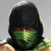
Retro Reptile (Hidden/Fightable)Special Moves:
Spear: B, B, ▢
Iceball: D, F, ✕
Slide: B, F, O
Invisibility: D, U, O
Fight Retro Reptile:
On "The Pit 2 (Night)" stage wait until a shadowy figure flies across the moon, then get a double flawless victory and perform a stage fatality.
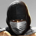
Retro Smoke (Hidden/Fightable)Special Moves:
Spear: B, B, ▢
Teleport: D, B, O
Air Throw: R1 (In Air, Close)
Fight Retro Smoke:
On "The Living Forest" stage wait until Smoke appears behind one of the trees. On that moment press (D+Select) repeatedly.
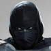
Retro Noob Saibot (Hidden/Fightable)Special Moves:
Teleport Slam: D, U
Fight Retro Noob Saibot:
When you see Noob in "The Temple" stage's background, win both rounds without using R2.
Special Moves:
Fan Throw: D, F, ▢
(Jade has Projectile Immunity)
Fight Retro Jade:
Get a double Flawless Victory and perform a Fatality on Shang Tsung when battling against him.